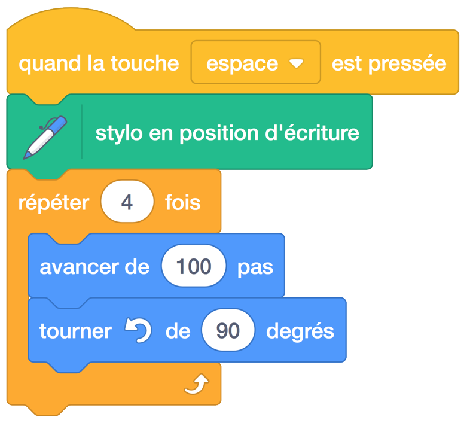

3. Suivre la souris et dessiner des polygones (répéter et si/alors (if-else))¶
Aperçu rapide de la journée
Utilisez un bloc Répéter indéfiniment associé à un bloc si/sinon pour faire un personnage suivre la souris, puis faire un son quand il atteint le curseur de la souris. Présenter le stylo dans Scratch et l’utilisez pour dessiner des polygones réguliers avec le bloc de répétition.
- 20IN-PT.1 Appliquer diverses stratégies de résolution de problèmes pour résoudre des problèmes de programmation dans le cours Informatique 20.
- 20IN-FP.2 Faire des recherches sur la manière dont les structures de contrôle affectent le déroulement du programme.
Si vous préférez regarder une vidéo, la vidéo suivante montre les mêmes idées que celles que j’ai décrites dans le texte ci-dessous.
3.1. Personnage qui suit la souris¶
Faisons un programme qui a un chat qui suit le curseur de la souris autour de la scène, qui miaule quand il touche le curseur de la souris. Pour commencer, connectez un bloc bloc “répéter indéfiniment” à un bloc “Quand “touche” est cliqué pressé” sous l’onglet événements. Maintenant, mettez un bloc “s’orienter vers (pointeur de souris)” (point to mouse-pointer) l’intérieur du bloc de répétition. Votre programme devrait ressembler à ceci:
Lorsque vous appuyez sur la touche espace, vous devriez voir le chat continuer à tourner et faire face à la direction du curseur de la souris. Pour faire bouger le chat, connectez un bloc de “avancer de 10” à la dernière partie du bloc de répétition, comme suit:
Lorsque vous appuyez sur la touche espace maintenant, le chat devrait suivre le curseur de votre souris sur l’écran. Il y a un problème évident, cependant, quand le chat attrape réellement la souris. Le chat dépasse la souris, passe de l’autre côté, se retourne, fait la même chose encore une fois. Corrigeons cette situation en demandant au chat d’arrêter de bouger quand il se rapproche de la souris, et de faire un miaulement à la place.
Nous avons appris dans la leçon précédente que chaque fois que vous voulez poser une question à l’ordinateur, vous pouvez le faire en utilisant un bloc si-alors. Bien que nous puissions utiliser un bloc si-alors pour demander si le chat est proche de la souris, dans cette situation nous voulons faire quelque chose si le chat est loin, et une chose différente quand le chat est proche. Pour des situations comme celle-ci, nous pouvons utiliser un bloc si/sinon. La question que nous voulons poser à l’ordinateur est de savoir si le chat touche ou non le pointeur de la souris. Si c’est le cas, nous voulons que le chat fasse un miaulement. Si ce n’est pas le cas, le chat devrait se rapprocher de la souris. Pour faire cela dans Scratch, connectez un bloc si/sinon à l’intérieur de votre bloc répéter indéfiniment comme l’exemple suivant:
Note
Notez que lorsque le chat touche le curseur de la souris, le script entier s’arrête et attend que le son soit fini. Si ce n’est pas le comportement que vous souhaitez, vous pouvez utiliser le bloc jouer le son au lieu bloc jouer le son jusqu’au bout.
3.2. Vérifie ta compréhension¶
scratch-conditionals1: Compte tenu du code ci-dessous, combien de fois entendrez-vous un miaulement quand vous cliquez sur le drapeau vert?
scratch-conditionals2: Compte tenu du code ci-dessous, combien de fois entendrez-vous un miaulement quand vous cliquez sur le drapeau vert?
scratch-conditionals3: Compte tenu du code ci-dessous, combien de fois entendrez-vous un miaulement quand vous cliquez sur le drapeau vert?
3.3. Dessiner des polygones réguliers¶
Note
Pour permettre à votre personnage de Scratch d’accéder à l’onglet Stylo, vous devrez peut-être cliquer sur le bouton “Ajouter des extensions” (en bas à gauche de l’écran) avant de cliquer sur le bouton Stylo.

Chaque sprite dans Scratch a la capacité de dessiner avec un stylo virtuel qu’ils tiennent en tout temps. Cela permet à chaque sprite de laisser une trace qui indique où ils ont marché. Pour ce faire, vous devez utiliser le bloc stylo en position d’écriture (pen down) de l’onglet Sytlo, puis faire bouger votre sprite. Explorez ceci en essayant ce qui suit:
Pour supprimer la trace que vous avez dessiné, double-cliquez sur le bloc effacer tout (clear) l’onglet Stylo.
À ton tour 1
Maintenant que vous savez dessiner sur la scène, voyez si vous pouvez dessiner un carré en utilisant seulement le stylo, utiliser les blocs avancer de __ et tourne de __ degrés
Pour beaucoup d’élèves, le premier carré qu’ils dessinent serait avec du code qui ressemble à ceci:
Bien que cela crée un carré, notez qu’il y a du code répété plusieurs fois. Chaque fois que vous remarquez qu’un code identique est répété, cela devrait déclencher une cloche d’avertissement dans votre tête disant “Il doit y avoir une meilleure façon!”. Repensez à quand nous avons fait rapetisser un sprite. Nous avons utilisé un bloc de répétition. Nous pouvons améliorer le dessin d’un code carré ci-dessus en mettant le code qui apparaît à plusieurs reprises dans un bloc de répétition, comme l’exemple suivant:
À ton tour 2
Adaptez le code ci-dessus pour dessiner les polygones réguliers suivants: triangle (3 côtés), pentagone (5 côtés), hexagone (6 côtés), octogone (8 côtés). Configurez votre projet de sorte que l’appui sur la touche t dessine un triangle, c dessine un carré, p dessine un pentagone, etc.
Si vous complétez les polygones réguliers avant le reste de vos paires, essayez de dessiner un cercle et une étoile à cinq côtés.
Bien que vous avez peut-être utilisé une méthode d’essayer et de vérifier pour déterminer les angles utilisés pour dessiner les formes ci-dessus, il existe un modèle que nous pouvons utiliser pour dessiner ces formes. Notez les angles que vous avez utilisés pour dessiner les formes:
| Forme | Côté | Angle Utilisé | |
|---|---|---|
| triangle | 3 | 120 |
| carré | 4 | 90 |
| pentagone | 5 | 72 |
| hexagone | 6 | 60 |
| octagone | 8 | 45 |
| polygone | n | 360/n |
Note
Cette leçon s’inspire des idées du programme Beauté et joie de l’informatique .
3.4. Problème de pratique¶
Travaillez sur votre premier projet Scratch, pour tout le temps qui reste.
Note
Si votre enseignant ne vous a pas assigné un projet, vous pouvez envisager de faire une courte histoire pour pratiquer vos compétences Scratch. Assurez-vous d’utiliser les diffusions, les blocs de répétition et les blocs si-alors.